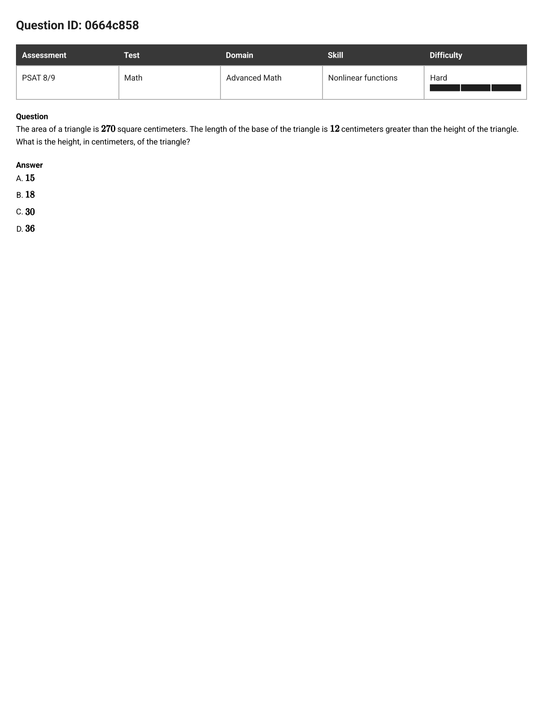
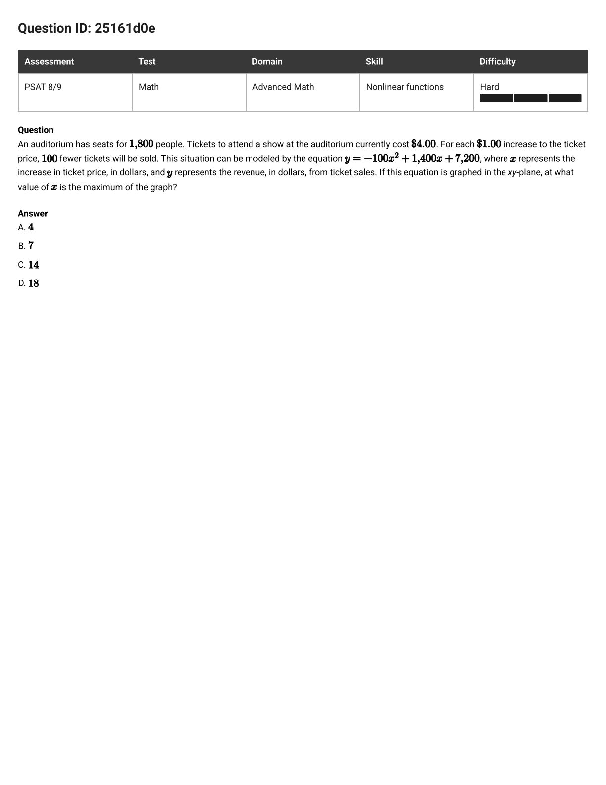
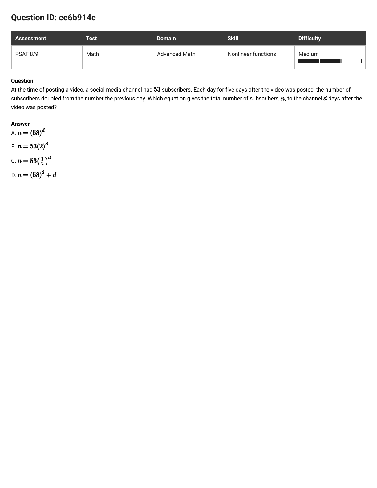
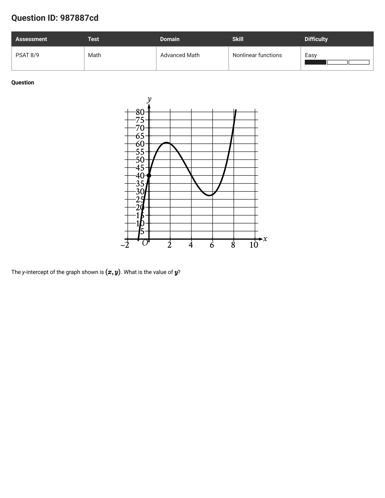
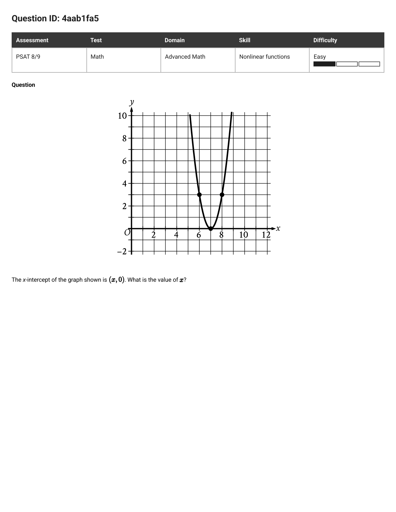
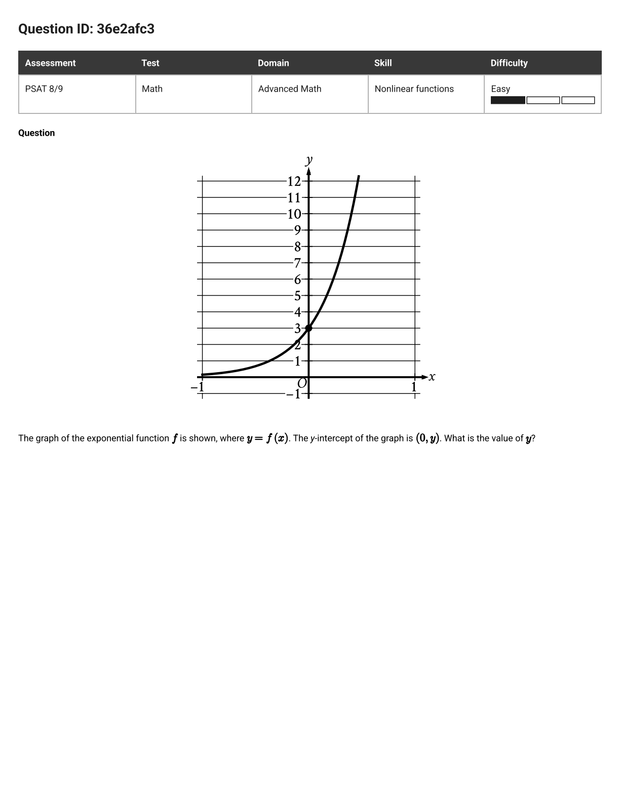

PSAT 8/9 · Nonlinear functions · 3 misses, one model
Three missed questions, three picked Ds — a doubled answer, a grabbed story-number, a flattened exponent. Different slips, one cause: pushing symbols around without first naming which family of function the story belongs to. Four steps fix all three.
Before writing anything, ask what is growing, peaking, or multiplying:
| Story signal | Family | Standard form |
|---|---|---|
| two related lengths multiplied (area, product) | quadratic | ax² + bx + c = 0 |
| best, most, maximum, peak | parabola vertex | x = −b / 2a |
| doubling, halving, each period | exponential | (start)(factor)time |
Copy the standard form and point at each piece: which number is a, which is b, which is the start, which is the factor. Most misses below died right here — with the right formula fed the wrong numbers.
Questions never want "the function" — they want one feature: the fitting root, the vertex x, the base. Reach past the other slots. Story numbers that never entered your form (1,800 seats, $4.00 today) are decorations; leave them on the table.
Heights must be positive. Day zero must give the starting amount. A maximum must sit between the zeros. Ten seconds of checking catches every trap on this page.
Doubled. Triangle: solved right (18), then doubled. The Check (½·30·18 = 270) kills 36 on sight.
Story-number grab. Revenue: 18 comes from the 1,800 seats — a number that never entered the equation. The Form step (label a = −100, b = 1400) locks the door.
Flattened exponent. Growth: added d instead of raising to it. The Check (day 0 must give 53; D gives 2,809) kills it in one line.

The question as it appeared
The area of a triangle is 270 square centimeters. The length of the base of the triangle is 12 centimeters greater than the height of the triangle. What is the height, in centimeters, of the triangle?
In plain words: turn "area from two related lengths" into an equation, then keep only the root a height could be.
Call the height h; the base is h + 12. Area of a triangle halves the product:
Double out: h² + 12h − 540 = 0, which factors as (h + 30)(h − 18) = 0.
Two roots: 18 and −30. A height can't be negative — done. Check: ½ · 30 · 18 = 270. ✓
B — 18.
Full slow version: nonlinear-functions.html Question 1.

The question as it appeared
y = −100x² + 1400x + 7200 models revenue, where x is the ticket-price increase in dollars. Graphed in the xy-plane, at what x-value is the maximum?
In plain words: "maximum" says parabola vertex — the only question is which numbers go in the formula.
Negative x² coefficient → opens downward → peak at the vertex x = −b / 2a. Label from the equation: a = −100, b = 1400.
B — 7 (a $7 increase, so $11 tickets, maximizes revenue).
Full slow version: nonlinear-functions.html Question 2.

The question as it appeared
At posting time a channel has 53 subscribers; each day the count doubles. Which equation gives subscribers n after d days?
In plain words: "doubled" names the family — then day zero interrogates every choice.
Start = 53, factor = 2: n = 53(2)d. That's B. The rest of the work is confirming the others die — which is worth doing, because the killing blows are reusable:
B — n = 53(2)d.
Full slow version: nonlinear-functions.html Question 3.
Three easy drills, one skill each: take only the slot asked for, straight off the graph. Then stretch targets to retry in the app.
987887cd · Easy · free response

The y-intercept of the graph shown is (x, y). What is the value of y?
40. Feature step, nothing else: y-intercept means x = 0 — read the dotted point where the curve meets the y-axis. The curve's fancy shape is decoration.
4aab1fa5 · Easy · free response

The x-intercept of the graph shown is (x, 0). What is the value of x?
7. Feature step: x-intercept means y = 0 — the parabola kisses the axis at 7. Notice this is the revenue miss's vertex, read off a picture instead of computed from a formula. Same feature, two directions.
36e2afc3 · Easy · free response

The graph of the exponential function f is shown. Its y-intercept is (0, y). What is the value of y?
3. This is the day-zero Check as the whole question: the start value of an exponential is where it crosses x = 0 — the dotted (0, 3). The habit that killed two traps in the doubling miss earns full marks here.
stretch · retry in the app
Hard questions you already got right — prove the model holds under pressure: 02e9349f 7ba3505c d32a142a. Run Shape → Form → Feature → Check on each before solving.